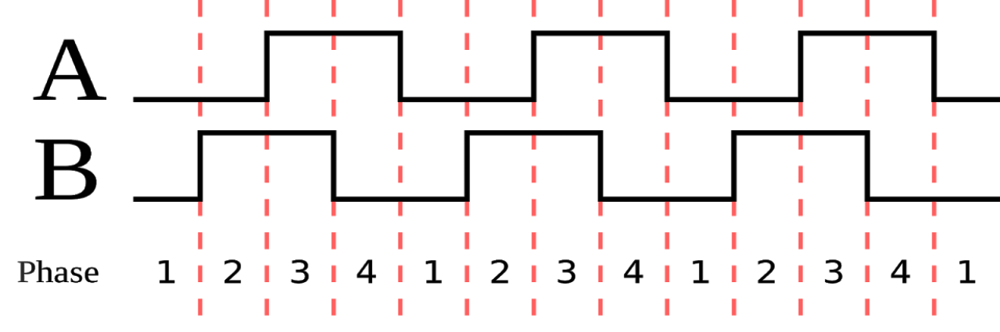
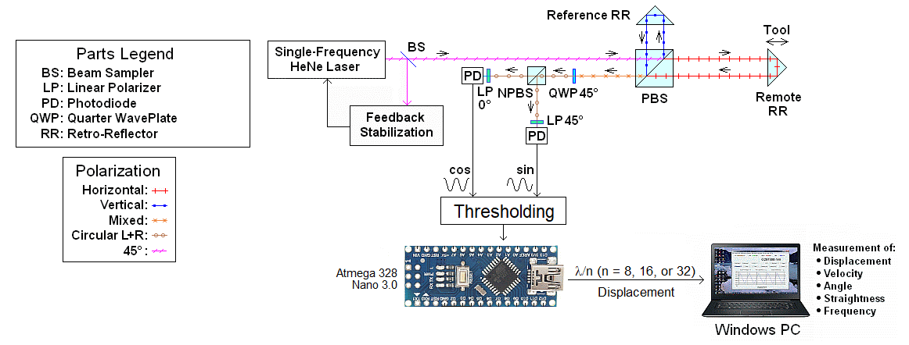
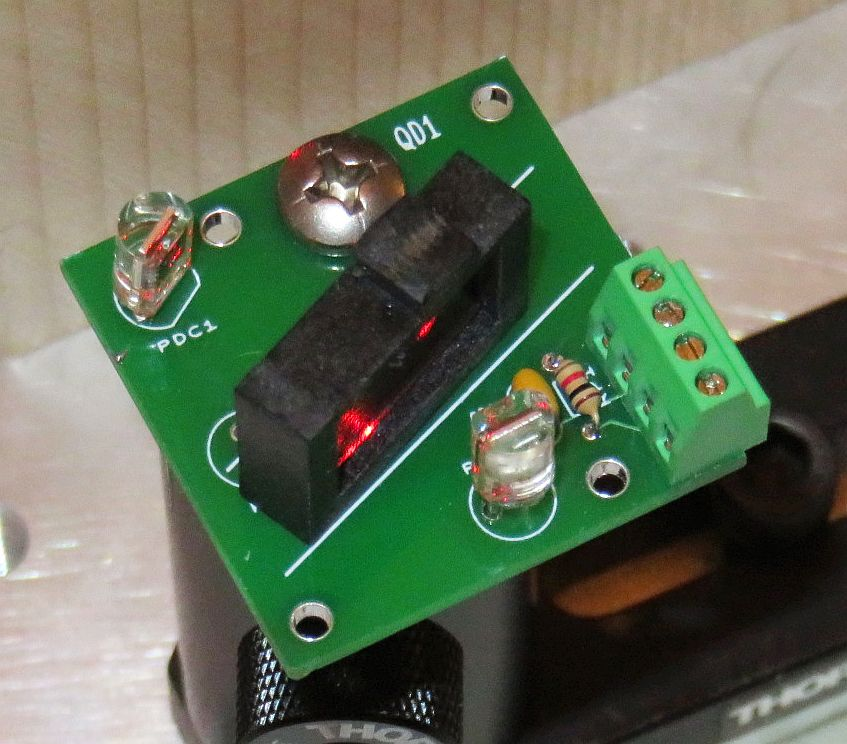

µMD0 is intended as in "intro level" system
for use in hobbyist, experimental, research, and other
applications where a bug in the hardware, firmware, or software, will not
have a significant impact on the future of the Universe or anything else.
While every effort has been made to avoid this possibility, µMD0 is an
on-going development effort. We will not be responsible for any consequences
of such bugs including but not limited to damage to the construction crane you
picked up on eBay for $1.98 + shipping, financial loss from ending up in
the Antarctic when the compass orientation provided by
your home-built ring laser gyro was off
by 1,536 degrees, or bruising to your pet's ego from any number
of causes directly or indirectly related to µMD0. ;-)
Thanks to Jan Beck for providing support for enhancements
and bug fixes and tolerating my silly C coding questions.
He was also instrumental in developing the initial
µMD1 firmware and GUI. And for getting me interested
in actually getting involved in that project. If anyone had told me
six months ago that I'd be writing code in C, MIPS assembly language,
and Visual Basic - and enjoying it (sort of) - I would have suggested
they were certifiably nuts. ;-) Jan maintains the master GUI source code
as well as slightly different versions of both the µMD1 and
µMD2 firmware and a development blog on these and other projects.
Introduction
Note: Links to Web pages external to this document will open in a single
separate tab or window depending on your browser's settings.
µMD0 is an very inexpensive system for precision readout of displacement
(change in position), angle, straightness, and more
in metrology applications using (homodyne) interferometry
with single frequency lasers,
as well as devices like linear and rotary
encoders which produce Quad-A/B signals.
While targeted for
experimenters, hobbyists, and researchers, there is no reason why
µMD0 can't also be of value in science and industry.
The hardware platform is a readily available very inexpensive
microcontroller development board which communicates via
USB to a Windows PC, laptop, netbook, or tablet.
The graphics below show a rotary optical encoder which uses a pair of LEDs and
photodiodes physically offset by 90 degrees to generate Quad-Sin-Cos analog
signals which are then thresholded to yield Quad-A-B digital signals.
The specific type of sequence is called a "Gray" code (not based on color
but attibutable to someone named Frank Gray) and has the property that any
possible allowable change in value is a change in only a single bit.
This eliminates the ambiguity with sensors using the normal binary order
where two bits can change at not quite the same time.

(These graphics seem to be all over the Web. If anyone knows who the original
copyright holder is, I will acknowledge them.)
Many other types of encoders produce similar signals. They may use
optical, mechanical, or magnetic sensing, among others.
The input to µMD0 are the digital signals which can have change rates
of up to 100 kHz ore more. There is no support for analog inputs (other
to convert them to digital form by thresholding) now and never will be.
However, there are hardware quadrature interpolators available that go in-line
with the analog signals to multiply the effective resolution by anywhere
from 2 to 1,000 or more, so they are a possible option were higher
resolution is required. Those made by Renishaw are relatively
inexpensive on eBay. There are also ICs available that perform this function.
For use with interferometers, the only difference is that the origin of
the analog signals are from a different type of detector:

Typical Homodyne Interferometer Setup with Stabilized Single Frequency HeNe Laser using µMD0
This also applies to devices like Ring Laser Gyros (RLGs) which have
similar types of detection schemes.
Where the Path Length Difference (PLD) between REF and MEAS is less than
a few cm, the laser doesn't even need to be single frequency:
Typical Homodyne Interferometer Setup with Unstabilized Multi-Longitudinal Mode HeNe Laser using µMD0
This can be either a linearly polarized HeNe with its polarization
axis at 45 degrees (no LP required), or a random polarized HeNe oriented
so that its orthogonal polarization axes are at 0/90 degrees with the
external LP at 45 degrees. In the latter case, it may be necessary
to assure that the laser is well behaved - not a flipper; such a laser
may be noisy around the flip points.
For homodyne, the native resolution of single-pass interferometers
is 1/8th wavelength,
usually 633/8 or ~79 nm. But depending on the optics, this may be doubled
or quadrupled without requiring interpolation. Specifically, the Linear
Interferometer (LI, shown above) and Single Beam Interferometer (SBI)
have a native resolution of ~79 nm; the Plane Mirror Interferometer (PMI) and
High Stability Plane Mirror Interferometer (HSPMI)
have a native resolution of ~40 nm,
and the High Resolution Plane Mirror Interferometer (HRPMI)
has a native resolution of ~20 nm. It is theoretically possible to convert
a PMI or HSPMI into an HRPMI with the addition of a cube corner but the
alignment could be quite hairy.
Note that µMD0 refers specifically to the combination of the
Atmega-based hardware and firmware. µMD1 and µMD2 use
much higher performance hardware (see references).
It's possible there could be
µMD3, .... µMDn in the future using
the same GUI. :)
This document provides assembly, installation,
and operating instructions for the
µMD0 hardware and software. There is currently no PCB
so this would be done either on a solderless breadboard or prototyping
board. The entire parts cost excluding an antique PC is well under $10.
(Probably $25 if purchased from me, which includes friendly tech support).
Mote: Throughout this document, "µMD0"
to the Atmega-based hardware. "µMD" refers to the Windows Graphical
User Interface (GUI), which is identical for µMD1 and µMD2.
Specifications
Laser/encoder compatibility: Melles Griot / Pacific Lasertec
05-STP-901/91x, Teletrac/Axsys/General Dynamics 150,
Thorlabs HRS015, and various models from REO, SIOS, and others, as well
as home-built single frequency HeNe lasers. Lasers that are not
single frequency (multi-longitudinal mode) may also be used if the
Path Length Difference (PLD) between the REF and MEAS beams
including traversals through the
interferometer optics is less than a few cm.
Suitable DC power supplies will be required for the laser and/or
detector electronics. The µMD0
board is powered from USB. While all the common metrology lasers operate
at 633 nm, the wavelength is a settable parameter in the software, so
devices with other wavelengths can be accomodated.
Linear and rotary encoders with digital Quad-A-B formats (or Analog
Quad-Sin-Cos formats if converted to digital).
Interpolation may be done externally. The "wavelength" for lasers or
encoder rulings may be set from 1 nm to 10 mm in 0.001 nm increments
in the GUI.
Signal compatibility: Single-ended inputs between 0 and +3 V,
and differential RS422 are described in this manual; others can be
accommodated..
Interferometer optics support: Linear Interferometer (LI, 10702A),
Plane Mirror Interferometer (PMI, 10706A/B), Single Beam Interferometer
(SBI, 10705A), High Resolution Plane Mirror
Interferometer (HR-PMI, 10716A), Angular Interferometer (10770A),
Long Range Straightness Interferometer (LRSI, 10775A),
Short Range Straightness Interferometer (SRSI, 10774A), including
older versions as well Excel, Zygo, and other clone optics, and other
configurations like differential interferometers. Relevant
measurement parameters may be set for older, non-standard, and/or
for home-built interferometers, and to accomodate other
interferometer configurations which have a different multiplier
coeficient with respect to displacement or angle including
squareness and flatness.
Display: Graphical User Interface (GUI) runs on Windows PC
(not included). Click for a sneak peek at the µMD
Main Window. Note that there is no requirement that the GUI must
be used. The raw data from the firmware can be input to another
application of the user's choice via the USB port as it is simply
a space-delimited text stream. There is no communication in the
other direction (to the firmware). Details are left as an exercise
for the user but the format is included later in this document. ;-)
The GUI is identical to the one used with µMD1 and µMD2.
Number of axes: One (1) axis is currently supported by
the firmware. However, adding 1 or 2 additional axes by straightforward
modifications to the C code is quite possible,
though the aggragate throughput doesn't change.
The GUI can display the values of up to 3 axes with a "primary" axis
selected among them for the main readout and graphing. The values for
the other axes will also be displayed (but not shown in the graph).
There are no current plans for anything beyond this.
Measurement modes: Displacement, Angle, Straightness
Long, and Straightness Short. Behavior for Velocity and
Frequency (Discrete Fourier Transform (DFT) is unpredictable and
is likely to remain so. Flatness, squareness,
and other measurements that can be framed in terms of the modes, above,
should be possible. And Encoder Angle mode enables correct reading of
rotary encoders and ring laser gyros. All 3 axes must use
the same parameters.
Units: nm, µm, mm, cm, m, in, ft for displacement,
Straightness Long, and Straightness Short, with /s for Velocity;
arcsec, arcmin, degree for Angle measurements.
Plotting/graphing: A real-time graph with automatic
vertical scaling and selectable horizontal compression
displays the trend of the selected parameter (e.g., displacement). The
DFT is able to display a rough analysis of the velocity data in
the frequency domain. The plot may be turned off (freeing up
desktop space and reducing CPU load if desired.
Environmental compensation: Manual entry of temperature, pressure,
and humidity. Digital sensor inputs are not supported due to limited
interest and too many hassles in getting them to work correctly with
µMD1. But there is nothing fundamental preventing sensors to
be added with firmware developed by the user. However,
uMD Central will not provide debugging support under any foreseeable
circumstances up to and including the exchange of large quantities of
folding money or Bitcoin. ;-)
Resolution: Basic resolution is 1/8, 1/16 or 1/32
wavelength for Displacement at 633 nm depending on the interferometer
optics, or 4 counts per cycle. With a Plane Mirror Interferometer (double
pass), the resolution is ~40 nm.
An adjustable weighted average to smooth data may be applied to the readout
and graph. There is no interpolation.
Maximum range: Displacement data is stored as 32 bit
signed integer where the basic increment is the resolution.
for a basic increment of 79 nm, +/-2 billion counts is around
+/-316 meters. However, if the GUI display is reset, the range may be
further limited by the values sent from the firmware.
Slew rate: While not yet tested, based on theory, this is believed
be greater than 125,000 counts/second with a Quad-A-B
interface implemented with a differential line receiver, which for a linear
interferometer translates to a velocity of around 1 cm/second.
The slew rate with the simple voltage comparator is further limited by the
pathetic bandwidth of the primitive photodiode circuit to perhaps a few
thousand counts/second (still enough to track a translation stage).
Adding a trans-impedance pre-amp would remedy that.
Data logging: Capture allows displacement data to be saved to a
file at the sample rate. The current default is 244.14 s/s. (All other
modes are a function of this data.)
Error detection: None. ;-)
Test capability: Software-based displacement function
generator can be used to simulate the behavior with no laser or
interferometer or even the data acquisition hardware hooked up.
Includes constant, ramp, triangle, and sinusoid functions with
adjustable frequency/slope, amplitude, and offset. For testing,
the error detection may be turned off.
Hardware platform: Atmega 328P Nano 3.0.
The board is powered from USB, which is also used for
firmware download and communications
with the PC-based GUI. The Nano is available on eBay for
for around $3. A kit of SG-µMD0 parts from me direct or on eBay is
around $25 and includes lifetime tech support. ;-)
Firmware development environment: Arduino IDE or UECIDE,
which are free downloads.
Firmware is written in C. But as a user, these are
only required to compile and upload the firmware to the Nano.
Where I provide the board as part of µMD0, a version of the
firmware will be preloaded. But updates in case of bug fixes (Arrrrgggg!)
will require being able to compile and upload. Despite the current
firmware is only 117 lines long and a large portion of those are
comments or blank, there will probably be at least one every 1/2
microsecond initially.
GUI development environment: Microsoft Visual Studio. The original
development was done under VS 2013, but later
versions work. This isn't of any consequence for the user
since the Windows executable is provided. The µMD GUI
may be test driven in "Test Mode" with simulated data
by downloading µMD.exe.
(However, this version is not guaranteed to be the most up-to-date.)
PC requirements: PC/laptop/netbook running Windows XP/Vista/7/10
higher with MS Net Framework 4.0 or higher for the GUI. It's possible
the Arduino IDE requires Win 7 or higher, but this hasn't been tested.
These will run on almost any PC with a free USB port that isn't totally
ancient. Generally, if a PC has a built-in USB port, it isn't totally
ancient. :) The firmware uploader can even be run from a USB thumb drive
if there isn't enough free disk space to load UECIDE. The GUI requires
minimal disk space or memory. For a full development environment using
Microsoft Visual Studio, 0.5 GB of free main memory (after Windows hogs
the rest of it) and 2 GB of free disk space is recommended. But again, as
a user, this should not be needed.
Firmware and GUI cost: These will be free for hobbyist,
experimenter, research, and other non-commercial users. The cost
for commercial users has not been determined but should be very modest
at most.
Support: Lifetime Tech support will be provided via email and
the µMD0 Web site (this manual). "Lifetime" is defined to be the
life of the user or the duration of the user's interest in precision
measurement. This definition is subject to change without notice. ;-)
However, while the source code may be provided and bug reports are welcome,
we will NOT support unauthorized changes to either the firmware or GUI unless
they are deemed by our experts to be critical to the future of the
Universe! ;-) However, for the specific case of the µMD0 firmware,
hacking is actually encouraged since (1) it's less than 100 lines of actual
code so how far wrong can one go? and (2) there may be a legitimate desire
do so (like adding axes 2 and 3).
Specifications are subject to change without absolutely any notice even
to the developers. :-)
Computer and Operating System Requirements
Everything that follows assumes the use of Windows. If you're
really smart and run Linux instead, sorry. ;-) (However, the GUI
may run on Linux under something called "wine" so there may be hope.) The
µMD GUI is known to work under Win XP, Vista, 7, and 10,
and should be fine on
Win 8 as well. Microsoft Net Framework 4.0 or higher is required
to run the µMD GUI. Net 4.0 or a more recent version is probably on
your computer already but is available free from the Microsoft Web site.
Wiring Diagram and Parts List using Solderless Breadboard
Since the Nano does most of the work, the only additional parts needed are
to interface to the encoder or laser. And some very simple circuitry
will suffice to get started - or forever. If higher performance is needed,
consider using µMD2 instead. Some typical basic circuits are shown
below:
The LM393 is an 8 pin DIP so it, along with the Nano and other parts, will
easily fit on the typical 250 column 2-1/4 x 3-1/4 inch
solderless breadboard with room to spare, but a custom PCB is also available
for the interface as well as one for a Quad-Sin-Cos Decoder.
For a distance of up to a foot or so, simple wires will suffice at the
modest speed of µMD0.

Quad-Decoder on Custom PCB (Left), µMD0 on Solderless Breadboard (Left-Center), µMD0 on Custom PCB (Right-Center), Screenshot of Linear Stage Movement (Right)
The Quad-A-B Differential version (RS422) is even simpler.
The input cables can be long and also be twisted with a single
100 ohm resistor between the two inputs for termination, but
there needs to be a common ground connection somewhere.
While the UA9637 is essentially a voltage comparator with built-in
hysteresis, it CANNOT be used with photodiode inputs because its
bias current is too high. The difference in resistor values for
the red and green LEDs balances their brightnesses, mostly. Of course,
the LEDs aren't *really* essential. ;-)
Tne value of 100K for the photodiode load resistors
has been selected as suitable for the typical ~1 mW SLM laser to result
in the signal going from near 0 to around 3 V. It's not necessary to
have them be adjustable since the threshold settings are adjustable.
But you can if you wish, and of course change their value to reflect
the real world situation of your laser power and losses in the Quad
decoder. If the source is differential analog (typically each 1 V p-p),
the signals can go directly to the comparator inputs dispensing with
the load resistors and trim-pot.
It is not anticipated that later versions will differ in any major way.
This is supposed to be bare bones after all. ;-)
Parts List
Here are the very long detailed parts lists. :) The numbering refers to
schematic above:
Analog version:
Prt# Description Comments
---------------------------------------------------------------------------
MPB1 Atmega 328 NANO Arduino board with pins
SB1 Solderless breadboard 3-1/4 x 2-1/4 inch, 250 columns
PCB1 SG-µMD0 V1.0 PCB Custom PCB
PCB2 Quad Decoder V1.0 PCB Custom PCB
U1 LM393P, 8 pin DIP Dual voltage comparator
LED1 LED, red Thresholded Sin, A
LED2 LED, green Thresholded Sin, B
R1 Resistor, 100K, 1/4W Sin (Channel A) load resistor
R2 Trim-pot, 10K Sin (Channel A) threshold
R3 Resistor, 100K, 1/4W Sin (Channel A) trim-pot isolation
R4 Resistor, 470K, 1/4W Sin (Channel A) hysteresis
R5 Resistor, 2-3K, 1/4W Red LED current limiting
R6 Resistor, 100K, 1/4W Cos (Channel B) load resistor
R7 Trim-pot, 10K Cos (Channel B) threshold
R8 Resistor, 100K, 1/4W Cos (Channel B) trim-pot isolation
R9 Resistor, 470K, 1/4W Cos (Channel B ) hysteresis
R10 Resistor, 30-50K, 1/4W Green LED current limiting
PD1 Silicon photodiode Sin (Channel A) of Quad-A-B detector
PD2 Silicon photodiode Cos (Channel B) of Quad-A-B detector
SKT1 30 pin 0.6" DIP socket For Nano (PCB version only)
SKT2 8 pin 0.3" DIP socket For LM393 (PCB version only)
STB1 4 pole screw terminal block Photodiode bias and inputs
RS422 version:
MPB1 Atmega 328 NANO Arduino board with pins
SB1 Solderless breadboard 3-1/4 x 2-1/4 inch, 250 columns
PCB1 SG-µMD0 V1.0 PCB Custom PCB*
U1 UA9637 or UA9639, 8 pin DIP Dual RS422 line receiver
LED1 LED, red Channel A
LED2 LED, green Channel B
R1 Resistor, 100, 1/4W Channel A termination resistor
R2 Resistor, 100, 1/4W Channel B Termination resistor
R3 Resistor, 2-3K, 1/4W Red LED current limiting
R4 Resistor, 30-50K, 1/4W Green LED current limiting
SKT1 30 pin 0.6" DIP socket For Nano (PCB version only)
SKT2 8 pin 0.3" DIP socket For LM393 (PCB version only)
STB1 6 pole screw terminal block A/B inputs, external power, and ground
* All fixed resistors are 1/8 W for PCB.
For this simple setup, a wireless breadboard with 25 columns should be
adequate. The Nano with soldered pins can plug in at the right side with
the USB connector facing out, and the LM393 and associated components
can be placed next to it. Those connections that cannot be made with
component leads should use pieces of #22-24 AWG solid wire.
The "cables" for the photodiodes can simply be twisted pairs.
Keep them short but a foot or so should be fine. If the source
is something else like a commercial optical detector or signals
from a self-contained laser/interferometer, a different type of
termination than the load resistors may be needed.
The (non-Alpha) versions of the firmware are absolutely guaranteed to be new
and improved in terms of features, capabilities, and performance. This
probably means there will be some new and improved bugs as well. The Alpha
versions are even more likely to have some juicy bugs. However, the
µMD0 firmware is so simple that bugs would have difficulty hiding. ;-)
Please contact us via the link at the top of this page should any dare to
appear (or for any other legitimate reason). ;-)
The LED on D13 is used as the heartbeat/status indicator for homodyne
depending on firmware version. Currently it blinks at between a
1 and 2 Hz rate, more or less.
There's probably little need to know the following unless something goes
wrong. Only marginally relevant ones are shown here:
Most of these details are really only relevant if there is a desire to
modify the firmware. For the firmware provided,
only the pin assignments matter.
Here is the communications format between the firmware and GUI. This
information is of little relevance if using the GUI, but will be
useful if writing your own application software or for data analysis.
Each of the values is sent as an ASCII string representing a signed (if
needed) decimal number separated by spaces at the sampling rate.
The firmware maintains a FIFO buffer so that if the USB
data is delayed for some reason, no data should be lost (hopefully):
The same format is used for both homodyne and Heterodyne modes,
not all fields will be filled in or relevant.
Standard (Single Axis) Data (8 values):
0: Axis 1 Count/REF Frequency Count* = REF frequency/Sample Frequency
1: MEAS Frequency Count 1* = MEAS 1 frequency/Sample Frequency
2: Displacement 1 (in 1/2, 1/4, or 1/8 wavelength)
3: Velocity Count 1 = (Displacement 1 - Previous Displacement 1)/Sample Frequency
4: 0/Phase 1 = Signed fractional offset between Displacement increments * 256
If Phase is not valid, then an error code is sent instead (heterodyne
only):
0x200 = no counter 1st REF
0x400 = no counter 2nd REF
0x800 = no counter MEAS 1
0x1000 = no PORTB 1st REF
0x2000 = no PORTB 2nd REF
0x4000 = no PORTB MEAS 1
5: Sequence Number (Unique serial number for each sample)
6: LowSpeedCode (See below)
7: LowSpeedData (see below)
The following 8 values will also be sent when Multiple Axis Mode is active:
8: Axis 2 Count/MEAS Frequency Count 2*
9: Displacement 2
10: Velocity Count 2
11: 0/Phase 2
12: Axis 3 Count/MEAS Frequency Count 3*
13: Displacement 3
14: Velocity Count 3
15: 0/Phase 3
LowSpeedCode (specifies contents of LowSpeedData):
0-99: GUI Data/Control:
0: No Data
1: Laser Power
2: Signal Strength
3: Temperature 1 (XXX.YY, °C, 0 to 70.00)
4: Temperature 2 (XXX.YY, °C, 0 to 70.00)
5: Pressure (XXX.YY mBar, 500.00 to 2000.00)
6: Humidity (XXX.Y percent, 0 to 100.0)
8: Sample Frequency (XXX.YY Hz)
10: Firmware Version (XXX.YY)
20: Homodyne Interferometer (if non-zero)
Low byte: # homodyne axes
Next byte: counts/cycle (4 for quadpulse)
(Not all of these are currently implemented.)
100-199: Diagnostics
200-255: Reserved
* The REF and MEAS Counts are the incremental change since the last sample,
NOT the total value.
If you purchased the from me directly, or via eBay, the latest released
version of the firmware has been preloaded. However, this step also
installs the USB serial driver which is NOT the same as the
one used with µMD1 or µMD2. It's worthwhile to
load the Arduino IDE
anyhow just in case the firmware needs to be updated
or you would like to hack it (which which remarkably, for
µMD0 is encouraged. Support may or may not exist
depending on what you are attempting to do.
The Arduino IDE will work with all versions of the firmware. It can be
downloaded free from the Arduino Web site and saved to your Downloads
directory any other convenient location. Then unzip the executable
and run Setup. There is no actually installation, it will just unpack
and copy files to the selected Arduino program directory. (Usually
something like "Program Files"). Name it the version number. Currently
the latest version is 1.8.13.
Plug the board into any available USB port.
Before the Atmega board can be used, a Windows device driver must be
installed to enable upload of firmware and communications with the
µSLC1 GUI.
There are many ways of doing this - some which may be overly complex, but
what I've done for the Atmega 328 Nano 3.0 board is to go to
Arduino Software and
install the current version of the Arduino IDE (V1.6.9 as of May 2016).
(I'm not sure if the board needs to be plugged in to a USB port during
this process, but mine was. During the install process, it will ask to
install the drivers. Reply "Yes" to all its requests. When the Arduino
IDE is started for the first time, go to "Tools", "Board", and select
"Arduino Nano". If the Nano is plugged in, its COM port should appear
under "Tools", "Port". If you received the Nano from me, it will have
µMD0 firmware. Go to "Tools", "Serial Monitor". The Serial
Monitor windows should appear and after a few seconds start pumping
out data from the board. Select a baud rate of 57600 to turn it into
something meaningful. With no laser, the data should look something like:
The more complex installations may be required if you bought the Nano
from eBay (or me) or off the back of a truck, depending on whether it
has the genuine FTDI USB communications chip. And even more complex
if it doesn't have the bootloader installed. Links for
driver installation may be found under
References under "Arduino". Instructions
for burning the bootloader may be found in the section:
Burning Bootloaders into the Nano or Pro Micro.
Nearly all have the bootloaded, but also nearly all require the
CH340 driver.
The Arduino IDE can be used for compiling and uploading.
UECIDE can also be used and is an order of magnitude or more
faster for compilation and uploading, but for the simple µMD0
sketch, it doesn't much matter.
For use with the Atmega328 Nano 3.0, either is fine if the Nano has the
"Old Bootloader". But UECIDE may not support it, so in that case, the
Arduino IDE must be used. Most eBay Nanos have the Old Bootloader but
Nanos from other sources like Amazon may have the New Bootloader (simply
called "Bootloader" in the Arduino IDE).
If you purchased the from me directly, or via eBay, the latest released
version of the firmware has been preloaded, so the following step should not
be necessary unless a later release is available or you would like to hack
the firmware - which is not really recommended.
The firmware (via the links, above)
is provided as a source file which probably has an extension
of ".pde" or ".ino" (though the specific name doesn't matter - it's just a
text file). However, the name may NOT contain any dashes "-" due to the
peculiar restrictions of Java or something. Make a directory with the name of
the firmware (without the extension) and put the firmware file there.
For example, if the file is named umd0_FW_v123.ino, make a directory
called umd0_fw_v123. and put umd0_fw_v123.ino in it. Note that case matters so
the name of the directory and name of the firmware file (without the
extension) must match case character-by-character exactly. Thus
Interferometer.pde is not the same as interferometer.pde
Plug the board into a USB port. I've occasionally seen problems
using a USB port replicator though these generally are acceptable. But if
the board doesn't come up or behavior is more erratic than
usual, go to a direct USB port.
Use Ctrl-O to open the firmware file.
Select the directory, double click on it, and then
open the firmware file itself. The source code should
appear in the same window unless a file is already open, in which
case a new window will appear.
(Or for testing, just go to Files->Examples->01.Basics->Blink and upload that.
It's easy to make changes and then see immediately that thay are taking
effect without risking the rest of the Universe.)
Use Ctrl-U to compile and upload the firmware to the board. This
typically takes a minute or two, unlike UECIDE which may finish
almost before the command is issued. :( :)
Once complete, status lines will appear at the bottom of the
Arduino window, the board will be automatically reset
and start running the firmware. No other status messages will appear
unless there are errors.
Windows should recognize that the COM port dropped out momentarily and
reappeared. The µMD0 firmware will be spitting out sequences of numbers
at the sampling rate. These may be viewed by going to:
Tools->Serial Monitor. With no interferometer hardware, they will
be rather boring with only the sixth value incrementing sequentially
(Sequence Number) and the 7th and 8th values
cycling among some obscure numbers (Low Speed Code and Low Speed Data).
To Windows, the board appears as a COM port. Thus any application
that processes COM port data can be used in place of the µMD GUI,
should this be desired.
If the firmware crashed somehow, Windows may display a
message saying something about the USB port not working. But that
shouldn't happen with any firmware downloaded from here. :)
And on rare occasions a cosmic ray or hardware glitch may result in
the upload failing with a checksum or other error. Just
try again. If the selected COM port is incorrect, cancel and retry.
Sometimes the Arduino IDE decides to change the COM port for no good
reason I can fathom. Go to Tools->Port, and make sure it has
selected the COM Port.
Once loaded, the firmware is retained in non-volatile memory so this only
needs to be done at most once - or until a firmware update is available!
The firmware may also be compiled without uploading by using Ctrl-R. Since
you haven't messed with the code, it should compile without errors.
This is slightly faster for testing and doesn't use the board at all so it
can be off doing whatever it pleases. :)
Important: Terminate any instances of the µMD GUI before uploading
the firmware and put the board into program mode (again if necessary)
AFTER doing this even if LED1 is flashing.
With µMD0 firmware loaded, the simplest way to test that the board
is working without running the GUI is to use the "Serial Monitor" (under
"Tools" in the Arduino IDE.) With the board reset, then open the Serial
Monitor. For a one axis setup, the terminal
window should begin spewing forth data similar
to the following:
If there is a display like this with the 6th number incrementing
by 1, the board is probably working.
(Should you care, the 7th and 8th values are the "Low Speed Code" and
"Low Speed Data", respectively. 10,209 is the firmware version 2.09;
8,24414 is the sample rate of 244.14 s/s, and 20,1095 specifies 1 homodyne
axis and a homodyne multiplier of 4.) Refer back to the communications
format for more info.
The µMD0 GUI
Latest Version of the GUI
Note: While described below, the "Velocity" and "Frequency" GUI modes
will not return predictable or consistent results since the serial packet
rate is not a controlled variable, but they may still be of some value.
User beware. ;-)
The GUI has been stable for several years, with only a
few updates mostly relating to environmental compensation. It is compatible
with all versions of the firmware. The GUI for µMD0 is identical.
Bug fixes: Forces number conversion to use USA format to prevent
the GUI from crashing if the PC was set up in a different country.
Eliminates the gross scale error in Frequency plots (but still may
be off by 20 percent depending on sample rate, and more if using the
ultra-low sample rate for hobbyist laser support).
Additions: Adds homodyne support for selectable number of
counts/cycle defined in the firmware. Updates copyright date. ;-)
Save the µMD GUI .exe file into any convenient directory. (There's
a small chance that the first time it's run, an error is produced since
there is no configuration file associated with it. Simply continue and the
GUI will come up. When it is closed using "Finish", valid settings will be
saved so that the error should ot appear again.)
When started, the µMD GUI (henceforth simply called the "GUI")
comes up in Displacement mode with graphing enabled. The only action
required by the user is to select the USB COM port. Once selected,
the readout and graph will begin displaying the interferometer data.
Even if there is no encoder or interferometer hardware attached to the
board, it is
possible to confirm that the Nano is talking to the GUI. Go to "USB Port"
and select the same COM as used to upload the firmware. The graph should
immediately start scrolling to the left indicating that it is accepting
valid data, even if it is all 0s. With homodyne, there will be no error
detection, but the fact that it started scrolling means the communications
link is working.
Important:
DO NOT reset the board while the µMD GUI is running.
The GUI will need to be aborted, the board may need to be reset again,
and only then can the GUI be restarted.
The GUI can be started at any time but the firmware must
be running before the USB COM port is selected or else the Universe
may implode. :) Confirmation of this issue is left as an exercise for
the user. ;-) There is usually no need to restart the firmware when
restarting the GUI. However, it is recommended, especially if it
has been running for a long time. If the GUI behaves strangely,
exitting the GUI and resetting the firmware may be required.
For the type fonts in the GUI to be correctly sized,
the display scaling may need to be set to 100% in Windows.
If it works OK, don't worry, be happy. :-) But if some characters appear a
bit too large in Windows 10: right click on the Desktop, "Display
Settings", "Scale and Layout". There is a similar option in Window 7.
For XP, you're on your own. :) This is not a bug in the GUI, it appears to
be an issue in Visual Studio.
When installed on slow pre-Jurassic computers :), avoid running other
applications at the same time and disable the screen saver as well as the
dim or turn off screen power saving options to avoid random errors due to
excessive latency.
For homodyne mode with µMD0, the default sample rate is 244.14 s/s.
Attempting to change it is not recommended and no one at µMD
Central is losing much sleep over the funny number.
The data includes counts for each axis including displacement, and velocity;
a unique sequence number to identify samples; as well as other
low speed data such as environmental
sensors and diagnostics. (More info can be found a few paragraphs above.)
The GUI displays are updated at approximately 60 Hz.
All the screenshots below except for ring laser gyro
use simulated data, which was more convenient for developing
this manual! However, it also means you can play around and recreate
these displays before building your interferometer.
This graphic below shows the typical GUI main window at startup.
µMD Main Window in Displacement Mode with Graphing Enabled (Startup Settings)
Main Window Controls
The first set are the selection buttons at the top of the window. Note that
except for USB Port, these require only a single click to activate:
Finish is the same as close or exit. :)
Open Log File is used to select the (optional) file for data
capture. This is a text file that will accumulate raw data from the
USB COM Port when capture is enabled. The button's label will change
to "Close Log File".
The log file is closed and its name and path are saved upon exiting the GUI.
Inteferometer Configuration opens a window to allow
settings for the type of
interferometer, units for display, paremeters for straightness and
angular optics to be entered. Although it may be possible to set
the interpolation checkbox, it will have no effect.
Environmental Compensation opens a window to enable
the temperature, pressure, and humidity to be entered manually.
Test Mode opens a window which
provides a means of exercising the GUI with a
software function generator, and also determines whether error detection
and diagnostic readouts are enabled, neither of which are valid in
Homodyne mode.
Help is a menu that may select "Information" which presently
tells the user to read this manual ;-) or "About" which lists the
GUI and firmware versions, and has links to the authors.
USB Port provides selection of the USB COM port for the
interferometer and monitor.
The first COM port to be opened is assumed to be for the interferometer
board. Make sure the selection is correct.
If a second COM port is opened, the current averaged displacement values
will be sent to it as a line of text at a rate of once every
(Graph Schollrate * 16 samples). For example, if the Scrollrate is 10, then
a line will be sent every 160 samples.
One use would be for another device to detect motion limits.
The format depends on the number of active axes:
The values are signed long integers of the designated displacement(s)
in nanometers including averaging and axis flip. (Same as the readouts.)
The "*" can be used by the parser at the receiving end to
detect the end of line.
To indicate that the Monitor COM port is active, a "+" will appear
to the left of the "Graph Averaging On" label, flashing at the rate
of the data lines being sent. Its color is subject to change without
notice. :) Note that the graph does NOT need to be visible for the
data to be transmitted.
Note: Once a USB port has been opened, the selection
cannot be changed or closed. Code to close an open USB port is purported to
do bad things and has been disabled. If an incorrect USB port was selected
by accident, exit the GUI and restart. Any open USB port will be closed
upon exiting.
µMD Main Window with Test Mode Function Generator Triangle Displacement Waveform
These may all be accessed via Alt-first letter.
The next set are the buttons, checkboxes, and other widgets on the
main window:
Displacement selects basic measurement of position or distance.
It is probably the mode that will be used most often. The displacement
data is also what all other measurements are based on.
Velocity selects measurement of linear velocity defined as
rate of change of displacement.
Angle selects angle mode and assumes the use of special
angular interferometer optics, either commercial from HP or similar,
or home-built.
When the "Encoder" checkbox in Interferometer Configuration is checked
µMD will use the constant small angle increment WTIHOUT the Trig
calculation and the text will change to "Encoder Angle".
This is useful with rotary encoders and ring laser gyros.
Straightness Long selects straightness mode using long range
straightness optics.
Straightness Short selects straightness mode using short range
straightness optics.
Flatness measurements using the angular interferometer optics with
the 55282A Flatness Accessory Kit (10773A Flatness Mirrors and 10759A
Foot Spacing Kit) should be possible in µMD
but I have been unable to determine
how exactly it's supposed to work. There is no explicit Flatness
button. Flatness seems to be a linear
deviation based on the combination of the measured angle and foot spacing
dimensions (2, 4, or 6 inches). For small deviations, it may be as
simple as using the Encoder Angle option with a specific Angle Reflector
Spacing value. However, the result would still be in angular units.
Alternatively, using "Straightness Short" with a custom value for
"Straightness Short Coefficient" set to the
ratio of the foot spacing to the angle reflector spacing
may be better. For example,
using the 2 inch (50.8 mm) foot Spacing plate and standard 32.61 mm
10771A Anguler Reflector, the Straightness Short Coefficient would
be set to 1.558, and 3.116 for the 4 inch and 4.673 for the 6 inch.
But for maximum precision, the calculation may need to
be done using an external application like Excel or Matlab operating
on the raw data. However, it would appear that the error for a 1 degree
angle (which would be HUGE) is less than 1 part in 106.
If anyone understands the Flatness measurement, or
has used µMD for Flatness, or doesn't agree with these
conclusions - or does, please contact me via email.
Disable Graph toggles whether to show the graph or not and will
change to "Enable Graph" when the graph is off. The data for
the graph is still saved when disabled but certain functions like the
DFT (Frequency) computation are not performed. Disabling the graph
both saves space on the computer screen and reduces computational load.
Enable Capture toggles the acquisition of raw data from the
USB COM port. The log file must first be opened for this button to have
any effect. Then, the label will change to "Disable Capture" and the
button will turn green signifying that capture is enabled and running.
Once the log file is open, capture may be turned on and off at will
with data appended to the open log file. Prior to each segment, the
line "Sample Frequency = XXX.XX Hz" is stored.
There are three options to select what data is saved:
For all conditions using interferometer data EXCEPT where the Test Mode
function generator is set to Constant and is OFF, only
Displacement and Sequence Number are saved.
The format is: "D: Displacement N: Sequence Number" where
Displacement and Sequence Number are values in decimal. The Displacement
an integer multiple of wavelength times the multiplier depending on the
type of interferometer. Example:
D: 51643 N: 15345
Assuming the use of a Plane Mirror Interferometer (10706A) with a
Homodyne Multiplier of 4 ("#define HomodyneMuliplier 4" in the firmware),
the Displacement would be 51643 * 39.56 nm or
approximately 2.043 mm.
When the Test Mode function generator is set to Constant and OFF,
ALL interferometer data is captured without any annotation.
The format in Single Axis Mode (8 values) is: "REFFrequencyCount
MEASFrequencyCount Displacement VelocityCount Phase SequenceNumber
LowSpeedCode LowSpeedData". Example:
1534 1532 51643 2 144 15345 0 0
The format in Mulitiple Axis Mode (16 Values) is: "REFFrequencyCount
MEAS1FrequencyCount Displacement1 Velocity1Count Phase1 SequenceNumber
LowSpeedCode LowSpeedData MEAS2FrequencyCount Displacement2 Velocity2Count
Phase2 MEAS3FrequencyCount Displacement3 Velocity3Count Phase3".
With Homodyne mode, only Displacement1, Velocity1Count, SequenceNumber.
LowSpeedCode, and LowSpeedData are valid. The others will probably be 0s.
Where the Test Mode function generator is ON and thus it is desired
to capture the simulated Test Mode data, Axis 1 data is stored.
The format regardless of mode is: "R: REFFreqeuncyCount M: MEASFrequencyCount
D: Displacement V: VelocityCount P: Phase N: SequenceNumber T" where the
"T" signifies that this is Test Mode data. Example:
R: 0 M: D: 51643 V: 2 P: 0 N: 15345 T
Caution: The log file can grow rapidly - especially where all the data is
stored - so it's probably not the sort of thing to do for hours on end
unless you have stock in a disk drive manufacturer! :)
All these formats have a fixed number of fields that are space-delimited.
Thus importing the log file into programs like Excel or Matlab should be
straightforward (if the size of the file doesn't break it).
Averaging adjust the "strength" of a moving average from 0 (no
averaging) to 999 (1000 samples of averaging). It is a logarithmic
scale so each third of movement represents approximately a factor of 10.
The color also changes from black to violet to remind you that averaging
is taking place. :)
When interpolation is enabled (the default), as averaging coefficient of
around 900 is recommended to minimize sample-sample noise in the graph.
The Averaging coeeficient is saved upon exiting the GUI.
Reset Display zeros the displacement and clears any errors
that may have occurred.
Suspend freezes the readout and graph and the button label
changes to "Resume" and its color changes to yellow. Pressing the
button then restarts the readout and
graph at exactly the point they left off. Thus, any change in position
or other parameter of the interferometer is not detected while suspended.
Suspend is useful when making adjustments to the inteferometer beam path
and/or laser.
Graph Averaging On checkbox determines whether averaging is
also applied the graph. Thus the graph can show raw data even if the
readout is averaged. (Does not apply to Frequency mode.)
Time Compression applies a sub-sampling factor to change the
rate of the graph scrolling. It does NOT average intermediate samples -
they are lost. (Applies to all except Frequency mode.)
The Time Compression factor is saved upon exiting the GUI.
Displacement, Velocity, Straightness Long, and Straightness Short
Range select the vertical axis scaling for their respective modes
including Auto (which is the default).
The format is slightly modified when Frequency mode is selected. This
graphic shows the actual DFT of the triangle waveform in the one above.
Note that the DFT coefficients go as 1/N rather than 1/N-squared because
it's actually using the velocity data, which is a squarewave.
µMD Main Window in Frequency Mode with Graphing Enabled
Frequency selects frequency mode which displays the frequency
content of the velocity data up to about 100 Hz on the graph.
(The 0 to 30 Hz range is shown.)
It uses a Discrete Fourier Transform algorithm operating on the
velocity data from the graph. Thus, the Velocity button
is also highlighted when
Frequency is selected to indicate this. The actual algorithm computes
the power spectral density and takes its square root.
The horizontal scale is approximately accurate for real data. The vertical
scale is somewhat arbitrary. The Main Readout shows Displacement
data when in frequency mode.
There may still an error of up to 25 percent is the actual values since they
depend on the sample rate being used, which varies depending on the sample
rate. The uMD technical department has not gotten
around to provided corrected labels, can you believe that? :)
Selecting Frequency sets Time Compression to 1 since the graph data is
used for the DFT calculation. There will also be a delay in the Frequency
plot accuracy depending on the DFT Frequency Range and input
signal as data is accumalated.
DFT Frequency Range determines the span for Frequency mode.
(Does not apply to other modes.)
The DFT Frequency Range is saved upon exiting the GUI.
DFT Amplitude Range selects the vertical axis scaling for
Frequency mode, including Auto (which is the default).
Main Window Indicators
Next are the various fields for displaying information in the Main Window:
µMD Main Window Showing Most Indicator Fields
Main Readout always shows the value of the measurement for the
mode that is selected except when in Frequency mode, in which case
it shows Displacement.
The units for the Main Readout, as well as for the graph vertical axis
(all except Frequency mode) are selected in the Interferometer
Configuration window. The options are nm, µm, mm, m, in, and ft for
all but angle, which has arcsec, arcmin, and degree. For velocity,
"/s" is added. The same units also apply to the graph
"Range" selection and vertical axis of the graph.
WL is the wavelength after environmental compensation
(if enabled).
For encoder applications with environmental compensation
OFF and "LI / Other" selected in "Interferometer Configuration", the
resolution will be WL / (HomodyneMultiplier * 2).
Simulated Data will be present whenever the Test Mode function
generator is ON to remind you that it's too pretty (or ugly) to be
interferometer data. :)
Error Detection Off will be present when the Error Detection
checkbox is not checked in the Test Mode window. Error detection is
disabled for homodyne mode anyhow.
Log File displays the name of the current open file for data
capture. The Capture button will only have an effect if a log file
is open.
These entries provide for selection of the type of interferometer used for
displacement/velocity measurements, the measurement units to be used
for the Main Readout and graph, parameters for the strightness and
angular optics, and whether to enable use sub-count interpolation.
All interferometer configuration parameters are saved when exiting the GUI.
µMD Interferometer Configuration Window
Linear coefficienets:
These settings only affect linear measurements.
LI / Other (1X) is used for the 10702A Linear Interferometer
or other interferometers with a resolution of 1/2 wavelength like the
Single Beam Interferometer (10705A). It will typically also be used
for linear and rotary encoders and other directly sources of Quadrature
signals which along with the "#define HomodyneMuliplier n" in the firmware
determine the effective resolution.
PMI (2X) is used for the 10706A Plane Mirror Interferometer,
10706B High Stability Plane Mirror Interferometer, or other interferometer
with a resolution of 1/4 wavelength.
HR PMI (4X) is used with the 10716A High Resolution
Plane Mirror Interferometer or other interferometer with a resolution
of 1/8 wavelength.
Units (as appropriate)
nm, µm, mm, cm, m select Metric units which apply to
displacement, velocity, and straightness measurements in the readouts
and graph.
in, ft select English units which apply to displacement,
velocity, and straightness measurements in the readouts and graph.
arcsec, arcmin, degree select the units to be used for angle
measurements in the readouts and graph.
Known quirk: If neither the COM Port or Test Mode is active, switching
among the Units buttons will only change the Units lable and/move the
decimal point/precision without affecting the readings. Just thought
you should know. ;-)
Parameters (as appropriate):
Angle Reflector Spacing enables the precise spacing parameter of
the angular optics to entered. The default of 36.610 mm is for the 10770A
Angular Interferometer with 10771A Angular Reflector. This
may also be set to some other value to accomodate an angle interferometer
with a different coefficient. (Range 1 to 100 mm in steps of 0.001 mm.)
Straightness Long Coefficient enables the precise multiplier for
the straigntness long interferometer to be selected. The default of 360 is
for the 10775A Long Range Straightness Interferometer with Cal 1.00. This
may also be set to some other value to accomodate an interferometer
configuration with a different multiplier coefficient relative to
displacement. (Range 100 to 1000 in steps of 0.01.)
Straightness Short Coefficient enables the precise multiplier for
the straigntness short interferometer to be selected. The default of 36
is for the 10774A Short Range Straightness Interferometer with Cal 1.00.
This may also be set to some other value to accomodate an
interferometer confirguration with a different multiplier coefficient
relative to displacement. (Range: 1 to 100 in steps of 0.001.) May
also be used for Flatness.
Miscellaneous:
Reverse Polarity flips the sign of the checked
axes. The measured direction of motion depends on the type
of laser (5501A/B versus 5517) and type and orientation
of the interferometer. Applies to all modes and graph. Frequency
will not change in the steady state, but since it uses the velocity graph
data, there will be a transient if the polarity of the primary axis
is changed on the fly.
Encoder Checkbox enables linear angle calculation with respect
to half wavelengths / Angle Reflector Spacing if checked. Useful
for devices like rotary encoders and ring laser gyros.
The combination of the Angle Reflector Spacing and Wavelength then
define the encoder's resolution. The text for angle mode will
change to "Encoder Angle" if the Encoder Checkbox is checked.
This is also equivalent to using the small angle approximation
for angle, but all the time. :)
The graphic below shows µMD1 being used to test a home-built ring laser gyro.
It is being rotated by hand on a Lazy Susan turntable. A combination
of Angular Reflector Spacing and the other resolution parameters can be
used to adjust the scale factor to read correctly.
Screen Shot of Sam's RLG Angle Readout using µMD1
Interpolation Checkbox This has no effect in homodyne mode.
This provides for entry of temperature, pressure, and humidity, or to
select the use of environmental sensor data if available. All environmental
compensation parameters are saved when exiting the GUI.
µMD Environmental Compensation window
Temperature Value may be entered in degrees C, F, or K as
specified by the Temperature Units Select. Any change results in
the compensation factor being recalculated.
Temperature Units Select may be used to specify degrees C, F, or K.
When selected, the temperature value is reset to 20, 68, or 293
degrees, for C, F, and K, respectively.
Temperature Auto Checkbox enables the use of a temperature sensor
if available. If the Auto checkbox is checked but no sensor is available,
the value will not change.
If the Temperature Auto checkbox is checked, nothing should change since
the homodyne firmware doesn't send any sensor data.
Test Mode sends 34 °C.
Pressure Value may be entered in mm/Hg or mBar (hPa) as
specified by the Pressure Units Select. Any change results in
the compensation factor being recalculated.
Pressure Units Select may be used to specify mm/Hg or mBar. When
selected, the pressure value is reset to 760 or 1,000 for mm/Hg and mBar,
respectively.
Pressure Auto Checkbox enables the use of a pressure sensor
if available. If the Auto checkbox is checked but no sensor is available,
the value will not change.
If the Pressure Auto checkbox is checked, nothing should change since
the homodyne firmware doesn't send any sensor data.
Test Mode sends 567 mm/Hg.
Humidity Value may be entered in increments of 1%. Any change
results in the compensation factor being recalculated.
Humidity Units Select Only relative humidity is supported.
Sorry, live with it. :) When selected, the humidity value reverts back
to 50 percent.
Humidity Auto Checkbox enables the use of a humidity sensor
if available. If the Auto checkbox is checked but no sensor is available,
the value will not change.
If the Humidity Auto checkbox is checked, nothing should change since
the homodyne firmware doesn't send any sensor data.
Test Mode sends 89%.
Wavelength Correction Buttons: turn Environmental Correction on
and off. Changing their state also resets the display. The default is ON
(using 20 °C, 760 mm/Hg, and 50% RH).
Vacuum Wavelength is the nominal wavelength which may be found
in the spec sheet for the specific laser. For reference, the default value
is 632.991372 nm (should it get changed accidentally or otherwise).
For use with encoders, it can be set to almost anything.
Wavelength Correction On and Off determine if environmental
compensation is enabled. The corrected wavelength will be displayed
as WL in the Main Window.
For use with encoders, it should be set to Off.
Note 1: With the current GUI, the Factors for Temperature, Pressure, and
Humidity will change based on the entered values
However, their exact value is not guaranteed to
be meningful and should only be considered for trends. This was supposed
to be fixed when the environmental calculations were corrected using the
NIST formulas, but the staff assigned to do the work took a couple decades
off, sorry.
Note 2: With Environmental Compensation turned OFF, the vacuum wavelength
is used in calculations. Therefore, Environmental Compensation should
be turned ON for laser interferometers even if using standard values.
The primary use of Test Mode is to exercise the GUI without the need for
a laser or actual interferometer hardware. :) The only other user function
that is useful would to disable error detection suring setup and alignment
of the laser and optics.
µMD Test Mode Window
Simulated Data On/Off controls the software function generator.
When enabled, its data overrides the data from the USB port. The waveform
is not affected by the Interferometer Configuration.
Waveform - Constant, Ramp, Triangle, Sine select the function.
The Waveform is saved upon exiting the GUI.
Frequency selects the function generator frequency with range
from 0.1 to 1 kHz. The slider increment is 1 percent of the selected range.
The entered frequency for the triangle and sine waveforms roughly
corresponds to real-time but this is not guaranteed.
Amplitude selects the function generator amplitude with ranges
from 0.01 to 1. The slider increment is 1 percent of the selected range.
Offset selects the function generator offset with a range
of +/-1 to +/-100. The slider increment is +/-1 percent of the selected
range.
REF is used as the REF frequency for the function generator
to compute MEAS and DIFF, irrelevant for Homodyne mode.
The REF value is saved upon exiting the GUI.
Units apply to amplitude with the same options as for the
interferometer - nm, µm, mm, cm, m, in, ft. These apply only
to the output of the function generator and do NOT affect the Main Window
units settings. There are no angle units.
Note that while Test Mode will operate in Angle mode, the values it sends
are always linear displacements. Thus, what this really means may be too
difficult for the average human brain to evaluate and may result in an
overload and an unintentional brain reboot endless loop. :)
The Units selection is saved upon exiting the GUI.
Multiple Axis Mode Checkbox enables the function generator to
send data to any combination of up to 3 axes. When checked, axis select
checkboxes appear below it to enable the selected axes. More on multiple
axis options below.
Axis 1, Axis 2, and Axis 3 checkboxes select the desired
axes for use with the Test Mode function generator.
Diagnostic Readout Check box enables the display to show
a variety of criptic values including the sample
rate, percent of cycles (or something) spent in the firmware processing
and percent spent in communications. Only the sample rate display is
currently meaningful.
Under some conditions, this may cause the current values of displacement
from the SG-µMD firmware to be displayed instead of resetting the
GUI readouts to 0s when the COM Port is opened, which may be a feature or
a bug depending on your point of view. Never mind that diagnostics
and reset should be totally unrelated to anything. Live with it or
figure out how it works and then tell us. ;-)
The Diagnostic Readout state is saved upon exiting the GUI.
Reset Display replicates the function of the reset button in the
Main Window.
While the firmware only supports one axis, adding axes 2 and 3 is
straightforward subject to the maximum throughput. The GUI has limited
support for multiple axes due to the software complexity and lack of
demand at the present time. (Though it's unlikely any amount of demand
will make the slightest difference.) If interested in hacking the
firmware, it's just matter of duplicating the PinA/PinB interrupt routines
and expanding the serial communications to 16 values. Contact me if
truly interested, though what may really be desirable is µMD. :)
Use the "#define Homodyne n" or "#define Heterodyne n" line in the firmware
specify how many axes will be displayed. The value for "n" may be 1 or 3.
Setting it to 2 will do the same thing as 3.
µMD Main Window with Multiple Axes Active
All GUI functions apply to the primary axis, which defaults on startup
to Axis 1. The primary axis is what the Main Readout, REF/MEAS/DIFF
frequency displays, frequency analysis, averaging, and graph
apply to. Clicking on the Axis 1, Axis 2, or Axis 3 labels will
select it to be the primary axis and change the color of the selected
axis label to identify it as the primary axis. The units of the primary
axis are also used for the others. Error detection (if enabled)
only applies to the primary axis. Averaging is NOT applied to the
Axis 1, Axis 2, or Axis 3 readouts, even the one that is the same as
the primary axis.
Note that in Multiple Axis Mode, the communications format sends somewhat
more data over the USB COM port and the GUI must perform more computation.
Thus this may cause problems for a wimpy pre-Jurassic PC operating on
the hairy edge of what's possible. Once Multiple Axis Mode is entered
using the interferometer hardware, the only way to return to Single Axis
Mode is to restart both the firmware and GUI. This is because neither has
any way to know whether dropouts of measurement clock signals are due to
a beam path being momentarily interruprted or an axis actually being shut
off (whatever that might mean).
Test Mode is also capable of exercising all three axes singly or in combination
but the function generator data will be the same for all. This is controlled
by the Multiple Axis Mode checkbox. When enabled, Axis 1, Axis 2, and
Axis 3 checkboxes will appear below it with Axis 1 being the default
on startup. Turning Multiple Axis Mode off will put the GUI back in
Single Axis Mode. But this will be overidden when Test Mode is turned
off if the USB port is enabled and the firmware is running with multiple axes.
Multiple Axis GUI support has been under development for a semi-infinite
amount of time. Specifications and
behavior are subject to numerous changes without notice. ;-) However, no
major features beyond what are described above are anticipated to be
implemented in the GUI.
Help Menu
Information has only one purpose at present: To direct you to
this µMD1 Installation and Operation Manual! ;-)
µMD1 Information Window
And it really is the one for µMD1 when what you really want is
this manual. :( :) Something else way down on the list of concerns
for µMD Central.
About lists the GUI build and firmware versions, and provides links
to our (Jan and Sam) Web sites.
µMD About Window
Troubleshooting
Naturally, all is expected to go smoothly. But if it doesn't, here are
some common problems. Some of these may be bugs in the firmware or GUI
as hard as that is to believe. So, if you find something that cannot
be solved based on what's below, contact us for a timely response:
GUI won't start and generates error about value out of range:
Ignore the error by hitting "continue" as there is no configuration file. The
GUI should come up. Close it using "Finish" and it will save a valid
configuration file and the error will not appear again except possibly
if a new GUI Build is run since each one has a unique configuration
file. (This error should not occur but at least be prepared!)
GUI starts but then generates error about value out of range:
If you are in a location where the interpretation of "." and "," differs
(e.g., Brazil), numbers with decimal points may get screwd up. One specific
instance is that for the wavelength in the Environmental Compensation window,
the decimal point gets ignored so that 632.993172 is interpreted
as 632991372, which is obviously out of range. Sorry, you'll just
have to move your entire operation to the USA (or at least set the
environment that way for now). ;-)
There is no valid USB Port available: The firmware is not running
or has crashed. (Hard to believe!) Exit the GUI and assuming the firmware
has been loaded, press the RESET button. With the present firmware, after
about 1 second, LED3 should be on at reduced brightness when the firmware
has started. It's actually flashing at the sample frequency but this may
not be obvious except by waving your eyeballs.
GUI generates error when the USB Port is selected: This means
either the firmware is not producing the proper communications sequence
or more likely, the board has simply gotten out of sync. Selecting the
USB Port a second time will usually clear it.
Graph is not scrolling after USB Port is selected: Similar to
above. First try selecting the USB Port again, but may require exiting
the GUI, pressing RESET, and reatsrting the GUI. Attempting to run
with an incompatible version of the firmware or firmware not properly loaded
or in a peculiar state can also produce this error.
There is no change in displacement even when there should be:
Assuming the Quad-A-B signals are coming from the correct sources (laser and
optical receiver, respectively), this usually means the interferometer
is installed or assembled incorrectly (e.g., backwards), is misaligned.
Displacement takes off up or down out of control:
In rare cases, such behavior can be due to noisy signals as a
result of crosstalk or improper termination. If a 50 MHz or higher bandwidth
oscilloscope is available, check the quality of the Quad-A-B signals.
And while the default value of 150 ohms for the terminating
resistors is generally satisfactory, depending on your wiring run length
and other factors, using a different (probably lower value) may be necessary.
Substituting a UA9639 for the UA9637 (if used) may also help.
It is a slower part and will tend to filter out any glitches. This
wouldn't be a preferred solution though and might earn you an "F" in
my CSE371 Intro to Computer Design course. :( :)
Displacement or velocity values are off by an integer factor: The
Interferometer Configuration does not match you interferometer hardware.
Angle or Straightness values are not accurate: The parameters of
your interferometers are non-standard. They may be adjusted over a wide
range in Interferometer Configuration.
Update of GUI readouts and other indicators is sporadic or slow:
While µMD0 should run on just about any computer that still runs,
this cannot be guaranteed for a 20 year old machine. Time to Upgrade.
However, CPU intensive applications like antivirus scans can hog resources.
The USB subsystems on some computers are more efficient than others and
there's no way to predict performance based on make or model.
Sensor values are not updating in real-time: There are no hardware
sensors so this is normal. :) Enter the environmental settings manually.